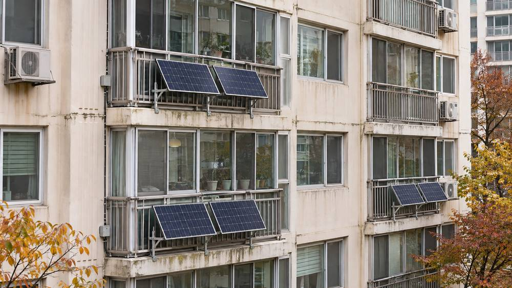
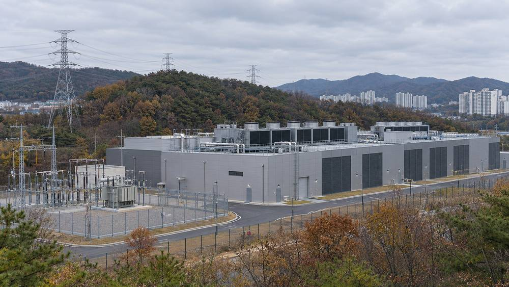

정치
산중위 예산안 의결 두 번째 연기…미래대응기금 지방교부세 산정 방식 쟁점으로
국민의힘 중복 편성·기금 소멸 뒤 대책 질의 / 더불어민주당 국가채무비율 들어 반박…법정 시한 12월 2일


베란다 태양광 지자체 수요 1만3,629가구, 정부 목표 10만 가구의 13.6%
한국에너지공단 7월 조사에서 56개 지자체 참여 의사, 필요 국비 약 39억 원은 추경 375억 원의 10.4%



철원·화천 군의원, 접경지역 정책포럼서 영농형 태양광 군민펀드 제안
철원 농지 약 60% 외지인 소유 우려…화천은 군 유휴 추정부지 약 1,087만㎡ 활용 특례 확대 제안

국방부, 정전에도 전력 잇는 군 에너지 전환 계획 처음 세웠다
4개 분야 12개 세부 추진과제 도출…장성 상무대 마이크로그리드는 태양광 3,015 kW·ESS 9.76 MWh 규모


기후에너지환경부, 수도권 데이터센터 전력계통영향평가 통과 점수 75점으로 올려 16일 시행
새 '전력이용밀도' 항목은 5점 감점, 시범운영 신청은 수도권 28건 1.9GW·비수도권 64건 7GW

경기도 공공부문 재생에너지 101%는 설비 기준, 실제 발전량은 사용량의 14%
28.5MW 설비 구축으로 목표 달성…2025년 발전량 8,543MWh, 전력사용량 60,823MWh


미래대응기금 8개 사업 4조3,472억 원, 신규·계속 분류 갈려…예산안 처리 시한 12월 2일
청년일자리도약장려금 9,012억 원 중 70.1%는 이미 채용된 청년 몫 / 기획예산처 신규 79개·계속 51개


진보당, 세계태양광총회 앞두고 원전 재가동 중단 요구…기후변화대응지수 한국 61위
지수는 64개국과 유럽연합 평가, 한국은 지난해보다 두 계단 올라…총회는 11월 15일부터 20일까지 대전서 열려


체코 원전 시공사 교체 두고 국회서 청문회 요구…새 시공사는 2027년 7월 선정 목표
국민의힘 특정 업체 의혹 제기 / 민주당 계약 조건 변경 논란 지적…청문회 개최 여부 미정
과기정통부 예산 1조 3,000억 원 넘게 증액…핵융합 228억 원 늘려
출연연 인건비 1,186억 9,700만 원 반영 / 예산결산특별위원회 심사 뒤 확정, 법정 처리시한 12월 2일


독일 생태경제연구소, 에너지협동조합 여성 참여 걸림돌 짚은 정책제안서 발간
쉬운 말·하이브리드 회의·활동 쉼 허용 권고, 브레멘 조합은 감사회 체험 프로그램 운영


서울시의회 오중석 의원, SH 임대단지 태양광 요금상계 현황 공개 요구
LH는 세종 행복주택 238가구에서 요금상계를 시작했고 SH 고덕 온빛채 697가구는 제로에너지건축물 3등급 단지다


햇빛소득마을 523곳 중 착수 가능 36곳…사업화 지원 우선 권고
1차 87곳 가운데 13곳만 즉시 추진, 59곳은 전력망 미비로 조건부 선정 / 2027년 예산안에 추진단 운영비 4억 6,100만 원 신규 편성


셰틀랜드 주민 에너지 단체, 스코틀랜드 정부에 지역에너지 지원금 다년 배정 요구
구들래드 공공재정 장관에게 서한…CARES 회복력기금은 2027년 3월 17일까지 써야

햇빛소득마을 1·2차 선정 522곳 중 490곳이 조건부, 국회 예산 심사에서 실효성 쟁점으로
행안부 발표 기준 조건부는 1차 77곳·2차 413곳, 임호선 의원은 내년 2,200곳 확대 계획에 예산은 이차보전 285억 원 중심이라고 지적

송·변전사업 104건 중 기한 내 준공 19건…주민 지원 늘리는 시행령 개정안 12월 1일까지 입법예고
국회 토론회서 은재호 교수 적시성·절차적 정당성·공간적 정의 충돌 짚어…정부 개정안은 지원금 3분의 2를 주변 마을에 배분

영농형 태양광법 12월 17일 시행인데…영양변전소 전기 공급 2년 6개월 늦춰져
154kV 영양변전소 2027년 6월에서 2029년 12월 말로 연기, 약 29㎞ 송전선로와 송전탑 약 76기 아직 착공 못 해

政治
気候エネルギー環境部、首都圏データセンターの電力系統影響評価の合格点を75点に引き上げ、16日施行
新設の「電力利用密度」項目は5点減点、試行運営の申請は首都圏28件・1.9GW、非首都圏64件・7GW
ドイツ生態経済研究所、エネルギー協同組合への女性参加の壁を指摘する政策提言書を発行
分かりやすい言葉・ハイブリッド会議・活動の休止容認を勧告、ブレーメンの組合は監査役会体験プログラムを運営
「日差し所得村」523カ所のうち着手可能は36カ所…事業化支援を優先するよう勧告
1次選定87カ所のうち即時推進は13カ所のみ、59カ所は電力網の未整備で条件付き選定 / 2027年度予算案に推進団の運営費4億6,100万ウォンを新規計上
シェトランドの住民エネルギー団体、スコットランド政府に地域エネルギー支援金の複数年配分を要求
グッドラッド公共財政担当大臣に書簡…CARESレジリエンス基金は2027年3月17日までに使う必要
日差し所得村、第1・2次選定522カ所のうち490カ所が条件付き、国会の予算審査で実効性が争点に
行政安全部の発表では条件付きは第1次77カ所・第2次413カ所、林好善議員は来年2,200カ所への拡大計画に予算は利子補給285億ウォン中心と指摘
送変電事業104件のうち期限内の完成は19件…住民支援を広げる施行令改正案、12月1日まで立法予告
国会討論会でウン・ジェホ教授が適時性・手続き的正当性・空間的正義の衝突を指摘…政府の改正案は支援金の3分の2を周辺の村に配分
政治
阳光收入村第一、二轮入选522处中490处为附条件，国会预算审议聚焦实效
据行政安全部公布，附条件入选第一轮77处、第二轮413处；林好善议员指出，明年计划扩大至2,200处，预算却以285亿韩元贴息为主
104项输变电工程仅19项如期竣工…增加居民补助的施行令修订案预告至12月1日
国会研讨会上Eun Jae-ho教授指出及时性、程序正当性、空间正义相互冲突…政府修订案将补助金的三分之二分配给周边村庄
Politics
Balcony solar demand from local governments reaches 13,629 homes, 13.6% of the 100,000-home target
Korea Energy Agency July survey: 56 local governments interested; required national funding of about 3.9 billion won is 10.4% of the 37.5 billion won supplementary budget
Bill would allow solar leases on industrial-park roofs and idle land before completion
Park solar stands at about 2.1GW, 35% of the 2030 goal of 6GW; referred to the standing committee on Nov. 17
Cheorwon and Hwacheon county councillors propose an agrivoltaic residents' fund at border-region policy forum
Concern that about 60% of Cheorwon farmland is owned by outsiders; Hwacheon councillor proposes wider use of about 10.87 million sq. m of presumed idle military land
Defense ministry drafts its first military energy transition plan, aimed at keeping power on during blackouts
12 detailed tasks derived across four areas…Sangmudae microgrid in Jangseong combines 3,015 kW of solar with 9.76 MWh of storage
Three special bills to merge five power generators filed, with Ulsan and Busan head-office options side by side
Kim Tae-seon bill puts head office in Ulsan / Lee Heon-seung bill in Busan; Kim Joo-young bill turns KEPCO into a holding company
Climate ministry raises Seoul-area data center grid impact pass mark to 75 points, effective Nov. 16
New 'power use density' item deducts 5 points; pilot applications: 28 projects (1.9GW) in the capital area, 64 (7GW) elsewhere
Gyeonggi's 101% public-sector renewable figure counts capacity; actual output is 14% of use
Target met with 28.5MW of installed solar…2025 generation 8,543MWh against 60,823MWh of power use
Progressive Party demands halt to nuclear restarts ahead of world solar conference as Korea ranks 61st in climate index
Index assesses 64 countries and the EU, Korea up two places from last year; conference runs Nov. 15-20 in Daejeon
PM Han: policies that worked in local governments will be pursued with the central government
Cites Sinan's profit-sharing and Yeonggwang's basic income as examples… 19 local governments present results
Jeju council presses on 5 GW offshore wind in pledge plan, demands basic income roadmap
Committee chair Kim Ki-hwan calls for a basic income roadmap / Province moves to put 5 GW into the 12th Basic Plan for Electricity Supply and Demand
Dutch lower house asks government for balcony solar connection framework by spring 2027
12 of 17 parliamentary groups in favour; 35% of households already have solar
Korea's agrivoltaics scale and crop notice due for pre-announcement in late November
Draft decree lets city, county and district heads limit generating capacity; resident co-ops need 10 or more members
German ecological economics institute issues policy paper on barriers to women in energy cooperatives
Recommends plain language, hybrid meetings and allowing breaks from volunteering; Bremen cooperative runs a supervisory board trial programme
Namwon councillor Roh Hyeon-i plans ordinance to return public car park solar income
About 30 residents and experts attend Nov. 10 forum at city council hall; cooperative setup and local return of income discussed
Seoul Councillor Oh Jung-seok Asks SH to Disclose Net-Billing Status at Rental Estates With Rooftop Solar
LH began net billing at 238 happy-housing units in Sejong; SH's 697-unit Godeok Onbitche is also a zero-energy building grade 3
None of Five Key Tasks for Korea's 100GW Renewables Goal Is Complete as Climate Solutions Releases Traffic Light Review
Deployment at 47.2GW, or 47.2% of the goal, with 0.36GW built of 36GW of permitted offshore wind
19 Gangwon Villages Apply in Third Round of Sunlight Income Village Program; Ministry to Name Final Picks in Late December
Gangwon already has 46 villages selected in the first two rounds; third-round applications closed October 30
Only 36 of 523 Sunlight Income Villages Ready to Start; Budget Office Urges Delivery Support First
Of 87 first-round villages, just 13 can proceed now and 59 were conditionally selected over grid shortfalls / 2027 budget adds 461 million won for the task force's running costs
Bangladesh, Kenya and three others back 300 million solar homes declaration for 2030
Indonesia's state utility and 34 MPs also join; declaration urges simpler permits and household finance
Shetland Community Energy Groups Ask Scottish Government to Award Local Energy Grants Over Several Years
Letter to Public Finance Minister Goodlad; CARES Resilience Fund money must be spent by 17 March 2027
490 of 522 Sunlight Income Villages Selected in Rounds One and Two Are Conditional, and Their Effectiveness Became an Issue in the National Assembly Budget Review
The Ministry of the Interior and Safety counts 77 conditional villages in round one and 413 in round two; Rep. Lim Ho-seon noted the plan to expand to 2,200 villages next year rests mainly on 28.5 billion won in interest subsidies
Only 19 of 104 Transmission and Substation Projects Finished on Time; Decree Amendment Boosting Resident Support Open for Public Notice Until Dec. 1
At a National Assembly forum, Professor Eun Jae-ho points to clashing demands of timeliness, procedural legitimacy and spatial justice; government's draft sends two-thirds of local grants to nearby villages
Agrivoltaics Law Takes Effect December 17, but Yeongyang Substation Power Supply Slips by Two and a Half Years
The 154kV Yeongyang substation moves from June 2027 to the end of December 2029; a roughly 29km transmission line and about 76 pylons have not yet started
Lawmaker Moon Geum-ju Files Bill Clarifying Nonghyup's Scope for Renewable Energy Projects
Agrivoltaics Act takes effect December 17; companion forestry-payment and tax-exemption bills announced the same day